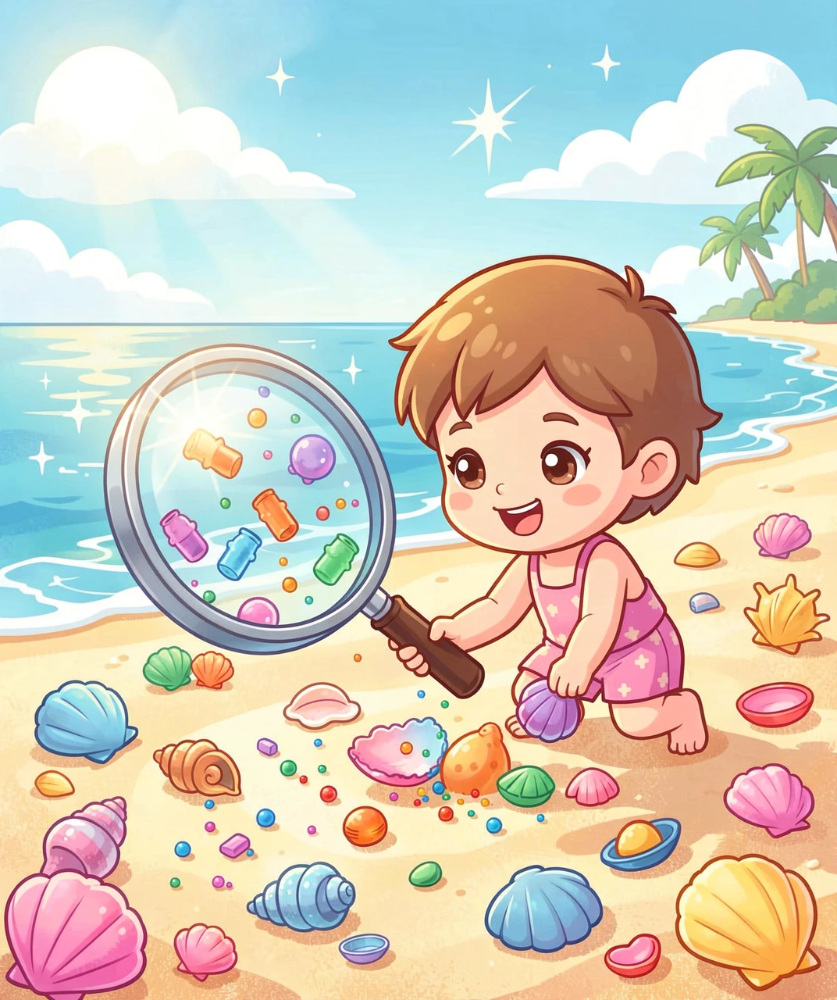
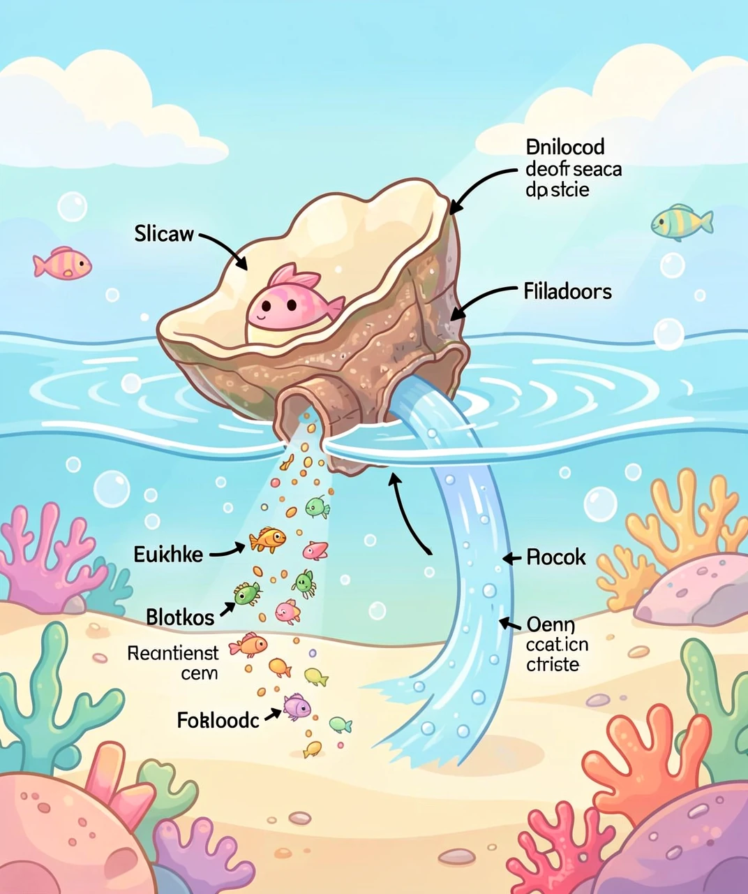
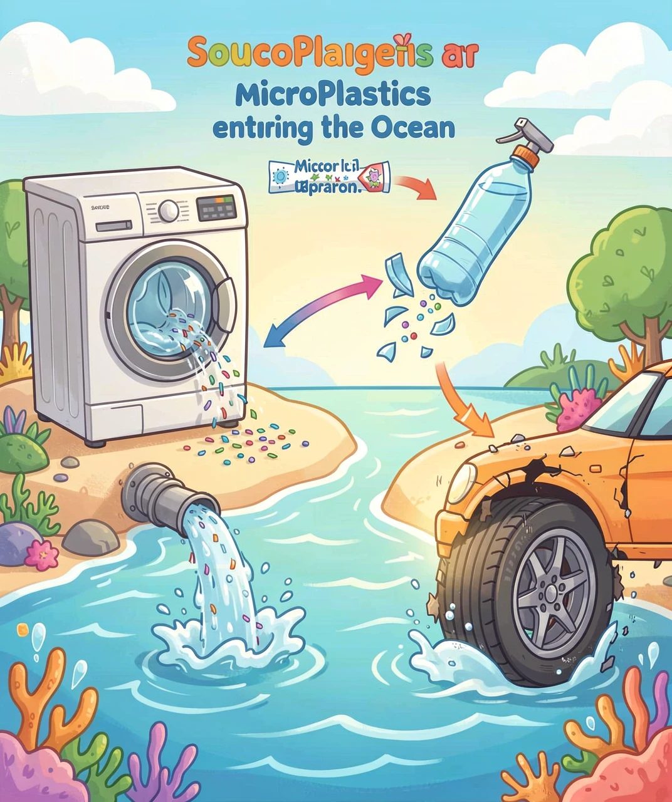
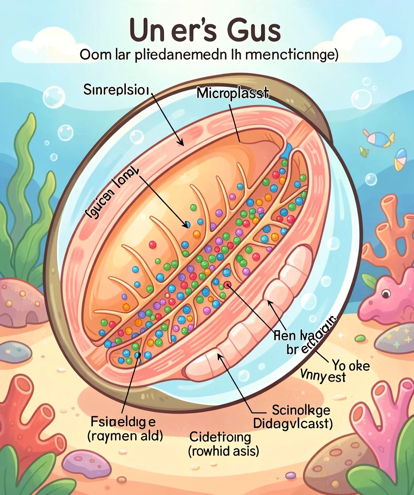

你捡起过海滩上的贝壳吗？它们在阳光下闪闪发光，里面曾经住着一个小生命。但你知道吗——今天的贝壳里，除了珍珠，还有一种肉眼几乎看不见的"隐形入侵者"：微塑料。

贝壳不是石头，也不是植物。它是软体动物自己建造的房子！
蛤蜊、牡蛎、扇贝、海螺……这些动物身体柔软，需要硬壳保护自己。它们从海水里吸收钙离子，用一种叫「外套膜」的特殊组织，一层一层地分泌碳酸钙，像3D打印一样造出螺旋形、扇形、椭圆形的漂亮外壳。
蛤蜊和牡蛎是滤食动物。它们没有嘴巴，而是用鳃来过滤海水——水从入水管流进来，鳃像一张精密的大网，把水里的浮游藻类和有机碎屑滤出来吃掉，然后把干净的水排出去。一只成年牡蛎每小时能过滤5升海水，一天相当于过滤满满一浴缸的水！

微塑料，就是直径小于5毫米的塑料碎片。有的小到肉眼根本看不见，要用显微镜才能找到。
| 来源 | 怎么变成微塑料的 |
|---|---|
| 🛍️ 塑料袋/塑料瓶 | 日晒、海浪冲击，碎成越来越小的碎片 |
| 👕 化纤衣服（聚酯纤维） | 每洗一件衣服释放几十万根微纤维，随水流进海洋 |
| 🧴 磨砂洗面奶/牙膏 | 含塑料微珠，洗脸时冲进下水道 → 河流 → 海洋 |
| 🚗 汽车轮胎 | 轮胎磨损的橡胶微粒被雨水冲进排水系统 |
| 🖌️ 油漆/涂料 | 船底防锈漆脱落的塑料微粒直接入海 |
科学家已经在地球上最偏远的角落找到了微塑料：马里亚纳海沟10927米深处、南极冰层里、甚至珠穆朗玛峰的山顶上。

还记得贝类是怎样滤食的吗？每只蛤蜊每天喝掉成吨的海水，把里面的东西全部吃进去。
微塑料的大小（几微米到几毫米）恰好和浮游藻类差不多。贝类的鳃分不清「这个是能吃的藻类」还是「这个是塑料碎片」——统统吃进去。

微塑料没有营养，但占地方。贝类吃了大量微塑料后，胃里满了，就停止滤食真正的食物。结果——营养不足，长得慢，能量储存减少。
微塑料纤维会缠绕和堵塞贝类精细的鳃丝结构。鳃既是呼吸器官又是滤食工具——一旦被堵，贝类就像被人捂住鼻子和嘴巴一样。
最细小的微塑料（纳米级）能穿透细胞膜，引发炎症反应和氧化应激——类似于人类的过敏反应，但发生在每个细胞里。
研究发现，长期暴露在微塑料环境中的牡蛎，产卵数量减少，幼体存活率下降。海洋的下一代正在被塑料"断子绝孙"。
问题看起来很可怕，但好消息是：我们能做很多事来减少微塑料进入海洋。
科学家们正在研发可降解塑料（用玉米淀粉、甘蔗做的）、吃塑料的酶（微生物能分解PET塑料）、以及海洋清理装置（巨大的网筛在海洋环流中捞塑料）。最酷的是：最近发现了一种叫Ideonella sakaiensis的细菌，专门吃PET塑料作为食物！
1. 微塑料的定义是什么？
A) 透明的塑料 B) 直径小于5毫米的塑料碎片 C) 塑料袋碎片 D) 塑料瓶残渣
✅ B) 直径小于5毫米的塑料碎片（有的甚至到纳米级）
2. 贝类是怎么把微塑料吃进去的？
A) 张开嘴吞 B) 滤食海水时连水带塑料一起吸进 C) 从沙里钻进去 D) 被海浪冲进去
✅ B) 贝类是滤食动物，用鳃过滤海水时误把微塑料当食物吃进去
3. 洗一件化纤衣服会释放多少根微纤维？
A) 几十根 B) 几百根 C) 几十万根 D) 几根
✅ C) 几十万根！每次洗化纤衣服都是一次"微塑料排放"
4. 微塑料对贝类最直接的影响是？
A) 让贝壳变成彩色 B) 假饱腹感——胃里满了但没吃到营养 C) 长出更多珍珠 D) 游泳更快
✅ B) 微塑料占据胃部空间，导致真正的食物摄入不足
5. 以下哪件事最能减少微塑料进入海洋？
A) 用更多塑料袋 B) 自带水瓶和购物袋 C) 扔垃圾桶（可能被风吹走） D) 把塑料埋起来
✅ B) 从源头减少使用！自带水瓶、购物袋，拒绝一次性塑料品。减量比回收更有效
🐚 每一片贝壳都是大海写来的信
每次去海滩捡起一个贝壳，别忘了跟你说捡到的不只是碳酸钙
——里面可能还有一小块人类丢掉的塑料。
但别灰心！今天减少一个塑料袋，明天少喝一瓶塑料瓶装水
——每一次小决定都在保护海洋。
大海很大，但你的好习惯能保护它。🐋
🏠 返回首页